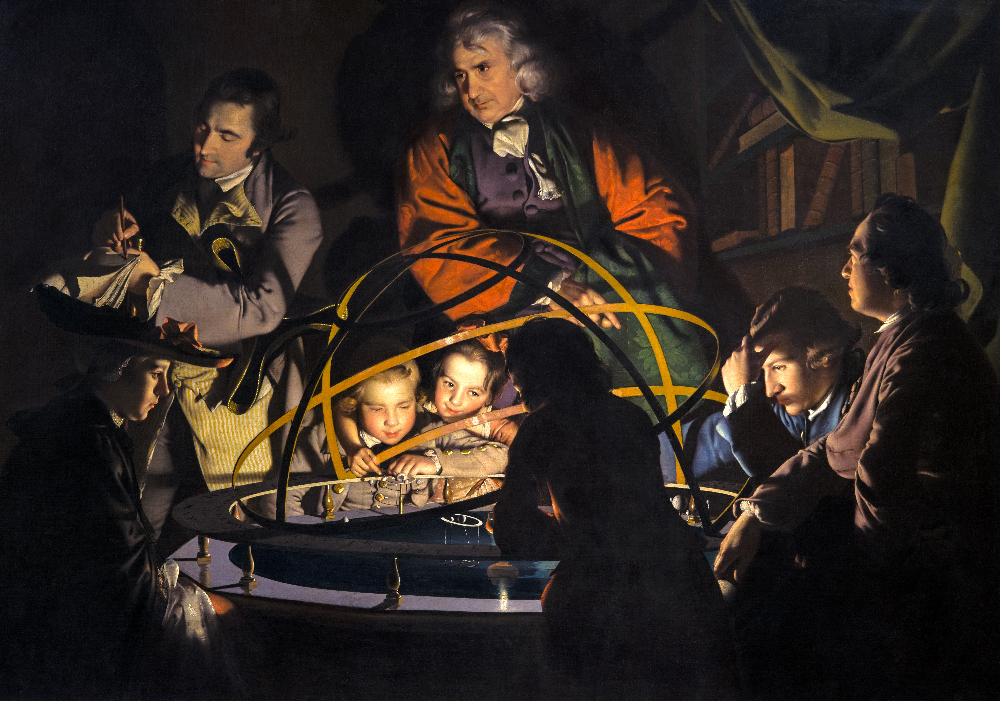
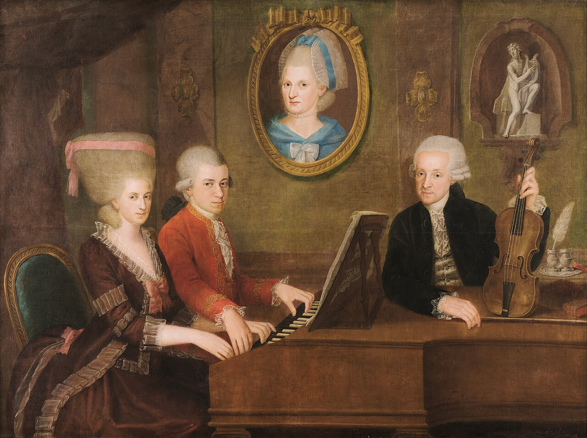
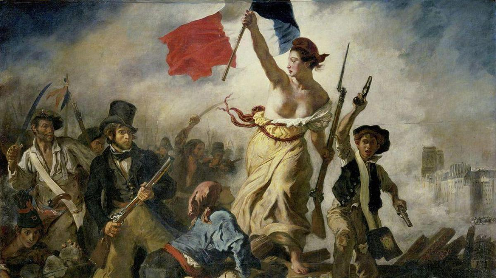
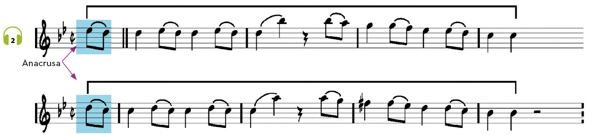

Historical Context
Classicism (1750–1820) was a period of great change:
- The Enlightenment: a movement that championed reason and freedom, which spurred the French Revolution.
- The economy changed with the Industrial Revolution, and the bourgeoisie (the new wealthy middle class) gained considerable influence over the nobility, whilst religion lost its hold on society.
- In art, beauty was sought by drawing on ancient Greece and Rome, and in music, the excesses of the past were abandoned in favour of clear, orderly and symmetrical works; furthermore, musicians began to work independently and to perform in public theatres for everyone, not just for kings or the Church.
|
The classical musical style is the one that developed in the second half of the 18th century around the works of three great composers: Haydn, Mozart and Beethoven. You should not confuse this musical style with the term ‘classical music’, which is used generically to distinguish art music from popular music. |
 |
 |
 |
To understand the transition from the Baroque to the Classical period, listen to these two pieces and answer the following questions:
🎧 Listening 1
- Which one would you find easier to sing along to?
- In which of the two do you perceive greater simplicity and balance?
Classical music is characterised by its proportion, balance and symmetry. Take another look and listen to the example of Classical music from the previous activity: it is the first movement of Mozart’s Symphony No. 40 in G minor, the melody of which will probably sound familiar to you.

Note in the score that the preceding melody is divided into two symmetrical half-phrases: 4 + 4 bars. The rhythm of the two half-phrases is identical; however, the symmetry in classical music is not only melodic and rhythmic, but is also evident in the harmony. We can therefore summarise the musical characteristics of Classicism as follows:
- Balance, proportion and symmetry of its musical elements: rhythm, melody, harmony, etc.
- The melody becomes easier to understand and remember, as it is structured in a more balanced way. We could say that there is a melodic question-and-answer pattern with the same number of bars.
- The harmony becomes simpler and the predominant texture is the melody with accompaniment.
What are we going to learn?
4. Classical music
4.1 – Religious vocal music
4.2 – Secular vocal music
4.3 – Instrumental music
4.4 – Instruments of the Classical period.